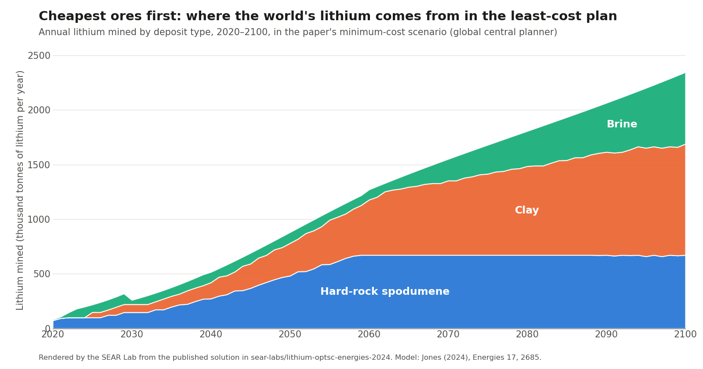

Lithium Supply Chain Model
An optimization model of the lithium supply chain, from mine to battery pack, now extended to regions, trade deals and competing players.
- Active
- 2024–present
- Critical minerals
- Supply chains
- Optimization
- Trade policy
- Batteries
![Three-panel schematic. Panel 1, One global planner (Energies, 2024): a vertical chain of mine, refine, cathode, cell and battery pack, with a recycle loop, decided by one planner weighing least cost against least CO2 from 2020 to 2100. Panel 2, Two regions and a trade deal (IISE Annual Conference, 2026): China and United States boxes linked by two-way trade, with Australia sending supply to China and, through a policy lever, a share of its refined lithium to the United States. Panel 3, Players and more minerals (work in progress): China moves first as leader and the United States responds as follower, solved by decomposition; below, a triangle linking the U.S., China and Australia for several battery minerals from mine to recycling.](img/hero.png)
In plain English
Electric vehicles and grid batteries will need many times more lithium within a few decades, and every tonne passes through a chain of mines, refineries and cathode, cell and battery-pack plants. Deciding what to build, where and when is a planning problem. This project builds the optimization model the lab uses to study it. The first version, published in Energies in 2024, planned the whole global chain from 2020 to 2100 as if one planner controlled it, weighing cost against carbon emissions.
Real supply chains have more than one decision-maker. Sarasadat Alavi's work extends the model to regions with their own costs and choices. A 2026 IISE conference paper splits the chain between the United States and China and tests a U.S.–Australia critical-minerals agreement that steers Australian refined lithium to U.S. plants. Current work goes two ways: a leader–follower version in which China, the dominant processor, moves first and the United States responds; and a three-region network (United States, China, Australia) that carries several battery minerals from mine to recycling.
Main points
- One model family, grown step by step: a single global planner (2024), then competing regions under a trade agreement (2026), then leader–follower games.
- Covers every stage from mining and refining through cathode, cell and battery-pack production, with recycling as an option.
- Draws company market shares from the lab's Critical Mineral Flows mapping to set each region's starting position.
- The 2024 model's code is public, checks its published solution without a solver, and anchors a 15-part teaching series.
- Next: leader–follower models of U.S.–China competition, solved by decomposition, and multi-mineral networks spanning three regions.
Interactive demoMineral supply chains →
Papers
Planning the world's lithium supply chain from mine to battery pack
Jones, E.C., Jr. (2024). Lithium supply chain optimization: A global analysis of critical minerals for batteries. Energies, 17, 2685. https://doi.org/10.3390/en17112685
What would a least-cost global lithium supply chain look like to 2100? Cutting its emissions 2% costs 6% more and brings in recycling.
- Cutting the supply chain's total CO2 by about 2% (56.8 to 55.7 gigatons over 2020–2100) raised its discounted cost by about 6% (USD 9.51 to 10.1 trillion).
- The least-cost plan never builds a recycling plant; the low-carbon plan opens 243 by 2050 and needs fewer mines (29 rather than 36).
- Most of the emissions come from making battery cells and packs, not from mining, so cleaner power at those factories matters more than which facilities get built.
- The least-cost plan draws first on hard-rock spodumene and clay deposits, the cheapest sources, and brings brine online as spodumene output levels off.

- PaperRead the paper (open access)
- Codesear-labs/lithium-optsc-energies-2024: reproduces the published model and checks its solution without a solver
- CodeArchived code release for citation (Zenodo DOI 10.5281/zenodo.22309105): lithium-optsc-energies-2024
- Codesear-labs/advopt-lithiumsc: a 15-part teaching series built on this model
Testing a U.S.–Australia lithium agreement in a two-region supply-chain model
Alavi, S., Aghapour, R., & Jones, E.C., Jr. (2026). Modeling policy-driven dynamics in the multi-regional lithium supply chain. Proceedings of the IISE Annual Conference & Expo 2026.
Steering Australia's refined lithium to U.S. plants cut U.S. imports from China but raised U.S. costs far more than it saved.
- Sending 10% to 60% of Australia's refined lithium to the United States gave the U.S. about 3% to 17% of cathode and cell production in the model.
- At 60%, modeled U.S. costs rose from about $258 billion to $1,869 billion, while U.S. spending on imports fell by about half (51%).
- China's costs fell by about 16%, so the agreement mainly moves production between countries rather than making the chain cheaper overall.
- Costs climbed fastest between the 30% and 40% scenarios, and the authors favor moderate targets over full independence from Chinese processors.
Correction note. The paper is inconsistent in two places: it states the horizon as 2050 in Section 2 and 2100 in Section 4, and its conclusions recommend a '20–30% U.S. midstream market share' although the modeled U.S. shares run only from 3% to 17% (20–30% is the share of Australian lithium allocated to the U.S.).
Correction note. The paper also says U.S. costs climb fastest between the 30% and 40% scenarios, but its own Table 2 shows that step is the smallest ($194 billion, against $231–298 billion for the other steps).
Code and materials
People
- Erick C. Jones Jr., PhD, PEPrincipal Investigator · SEAR Lab directorin
- Sarasadat AlaviMulti-region and game-theoretic supply-chain models · Author, Proceedings of the IISE Annual Conference & Expo 2026 2026
- Raziye AghapourAuthor, Proceedings of the IISE Annual Conference & Expo 2026 2026in
Current team: names to be added from the lab personnel sheet. Profiles marked in link to LinkedIn. More past and present lab members are on the SEAR Lab team page.